Antipasto

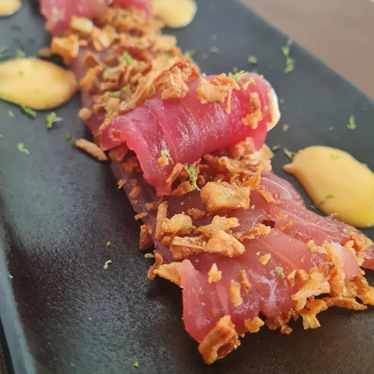
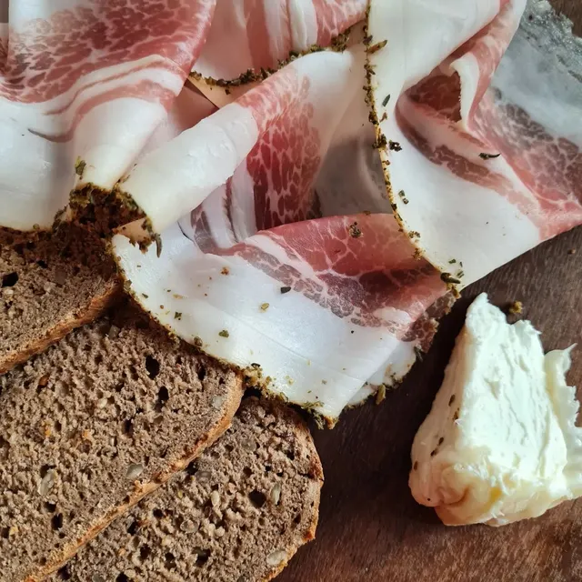

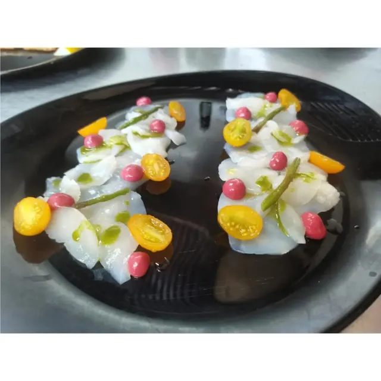
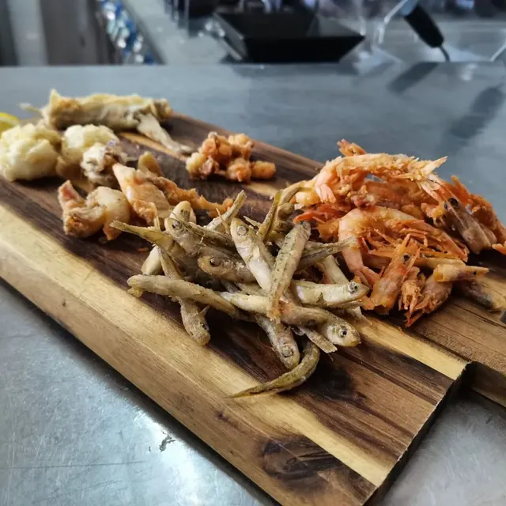
Polpo grigliatocon olive taggiasche, fagioli rossi e cipolla croccante
Primo

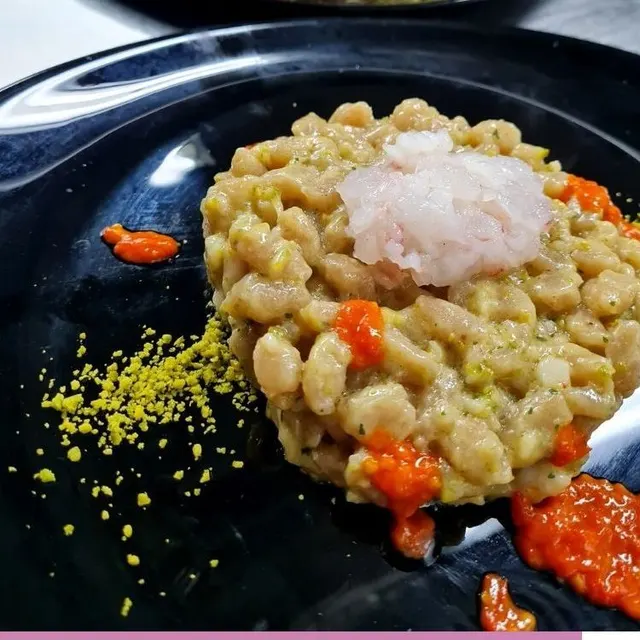
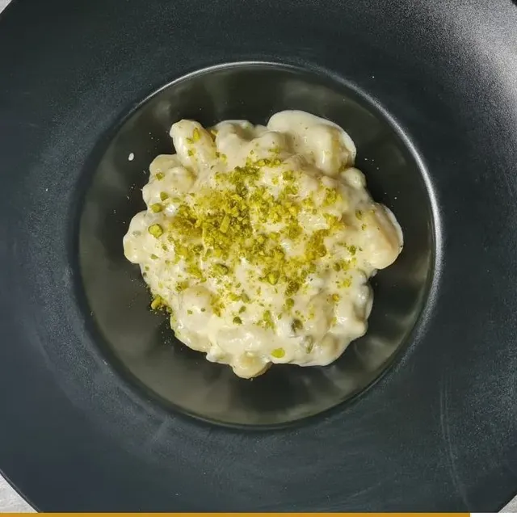
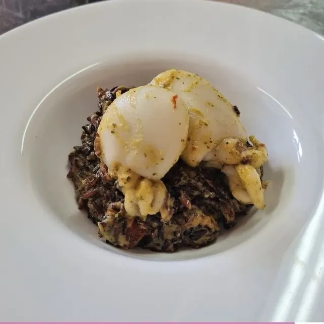
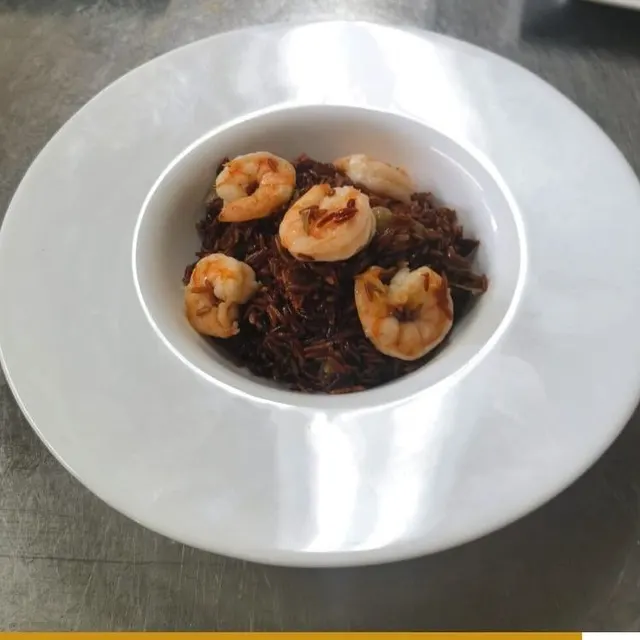
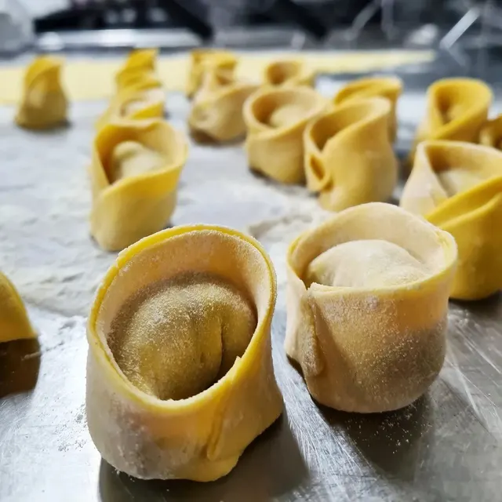
La Spadellatail nostro piatto per restare leggeri, tutto l’anno
Secondo
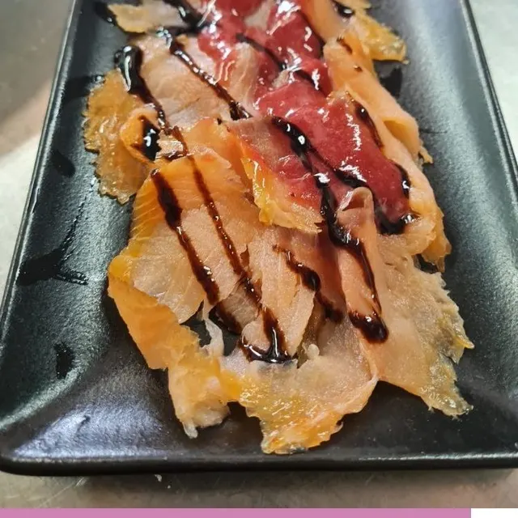
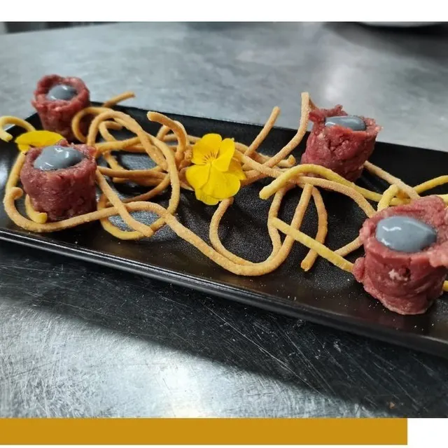
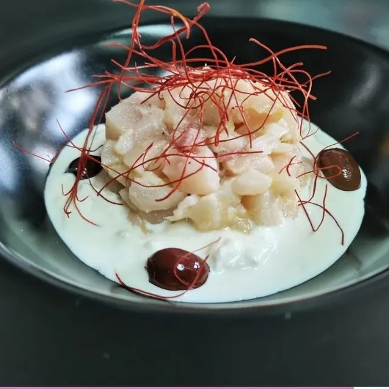
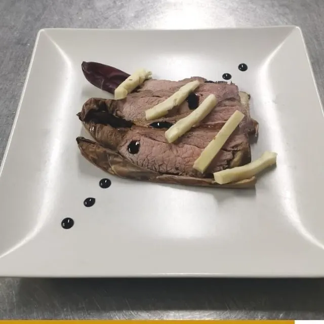
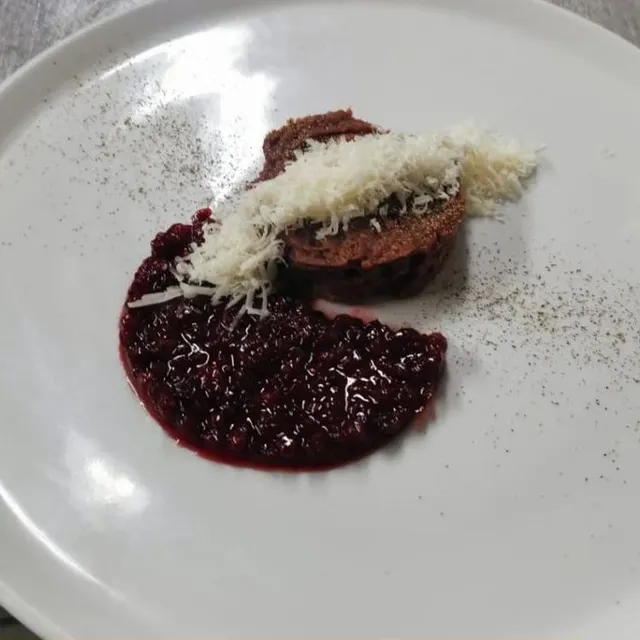
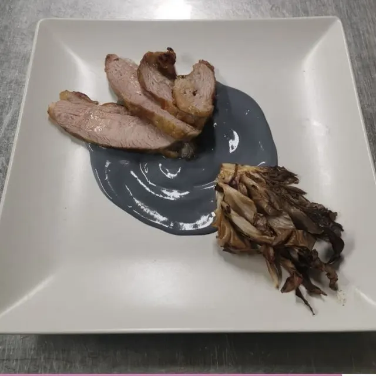
Carpaccio di salmone affumicatocon coulisse di fragole al Martini e glassa al balsamico
Il menu cambia ogni giorno: questi piatti ci sono stati e possono tornare, ma non sempre li trovi. Per il menu di oggi e per allergie o intolleranze chiamaci.
Sul menu
Qual è il menu di oggi?
Il menu cambia ogni giorno, secondo quello che arriva fresco. Per sapere cosa c’è oggi chiamaci allo 0383 940154, oppure guarda le nostre storie su Instagram.
Fate la pasta e i dolci in casa?
Sì: i cappellacci e i dolci nascono nella nostra cucina.